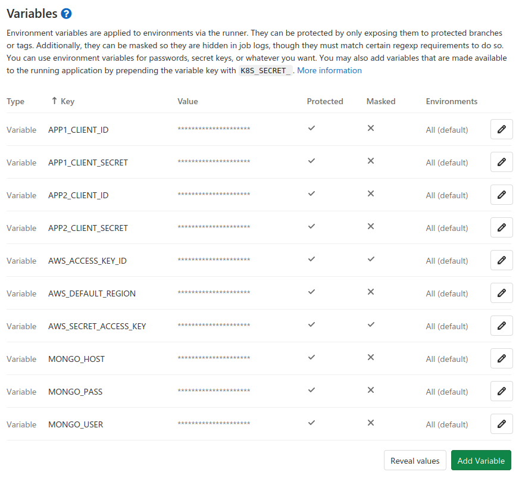
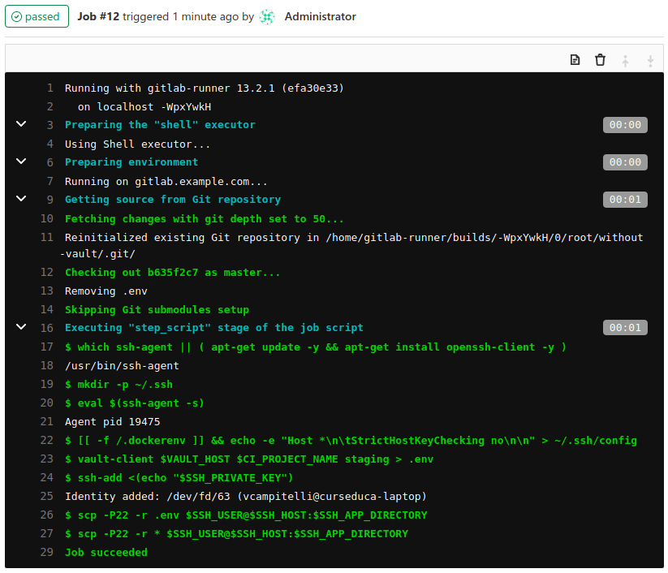

Quem sou eu?
Vinícius Campitelli
- Co-fundador do Curseduca
- Membro do PHPSP
- GitHub e Twitter como @vcampitelli
- Slides em viniciuscampitelli.com
Problemática
A 3ª regra do 12 Factor App é
sobre armazenar configurações em variáveis de
ambiente, e podemos fazer isso em diversos sistemas de CI/CD, como GitLab e GitHub.
Problemática
Lá devemos guardar algumas informações sensíveis, como usuário e senha para conexão com o banco de dados,
credenciais de acesso a serviços (por exemplo APIs)em>.
Problemática
Olhando do ponto de vista de arquitetura de sistemas, isso é ótimo: estamos isolando as configurações que geralmente
variam de acordo com o ambiente (desenvolvimento, homologação, produção, etc) nessas variáveis.
Problemática
Entretanto, sob a ótica de segurança da informação, temos um problema para a área de governança, já que as credenciais
ficam espalhadas sem muito controle, o que dificulta - e muito - a gestão, manutenção e renovação desses acessos.
Problemática
Governança de TI
|
|
|
|
|
repositório 1
repositório 2
repositório 3
repositório ...
repositório n
Referências
- Secure Software Development Life Cycle: https://dzone.com/articles/ssdlc-101-what-is-the-secure-software-development
- Capítulo Troque as credenciais regularmente do manual "Melhores práticas de segurança no IAM da AWS": https://docs.aws.amazon.com/pt_br/IAM/latest/UserGuide/best-practices.html
Proposta de solução
Podemos isolar essas informações sensíveis em um serviço externo e, no momento de deploy,
consultamos um gerenciador de senhas e injetamos como variáveis de ambiente em tempo de execução.
Proposta de solução
Esse gerenciador de senhas é conhecido como cofre de credenciais (também é chamado de cofre de senhas, mas prefiro o
termo mais genérico pois podemos armazenar qualquer tipo de informação sensível)
Proposta de solução

Cenário atual

Proposta de solução
Comparações
Comparações
Configuração das Variáveis de Ambiente
Problemática
- Dezenas de entradas
- Mistura entre variáveis de staging, produção e outros ambientes
- Valores expostos a todos os membros do repositório
Solução
- Apenas entradas para se identificar no Vault
- Acesso aos valores autorizado apenas aos gestores
Comparações
Configuração das Variáveis de Ambiente

Comparações
Visão da Governança sobre as Credenciais
Problemática
- Não possui ou controla em uma ferramenta externa (às vezes até em Excel)
Solução
- Centralizado em um único serviço
Comparações
Rotação de chaves
Problemática
- Manual e sucinto a erros
- Muitas vezes só feita após algum vazamento ou saída de algum membro da equipe
Solução
- Automática e programada em períodos de tempos pré-determinados
Exemplo de implementação
- Instalação de um ambiente de GitLab
-
Criação de um repositório de exemplo que lê as variáveis de um arquivo
.enve imprime na tela - Configuração do CI/CD do GitLab para publicar o repositório acima em um servidor
- Criação de um Serviço de Vault
- Desenvolvimento de um script invocado no CI/CD para consultar o Serviço de Vault e injetar as Variáveis de Ambiente
1. Instalação de um ambiente de GitLab

2. Criação de um repositório de exemplo que lê as variáveis de um arquivo .env e imprime na tela
$file = __DIR__ . DIRECTORY_SEPARATOR . '.env';
$handler = fopen($file, 'r');
while (($line = fgets($handler)) !== false) {
list($name, $value) = explode('=', $line, 2);
$_ENV[$name] = trim($value);
}
var_dump($_ENV);↓
array (size=7) 'AWS_ACCESS_KEY_ID' => string 'id' (length=2) 'AWS_SECRET_ACCESS_KEY' => string 'secret' (length=6) 'AWS_DEFAULT_REGION' => string 'us-east-1' (length=9) 'MONGO_HOST' => string 'localhost' (length=9) 'MONGO_USER' => string 'mymongo' (length=7) 'MONGO_PASSWORD' => string '"CDyV_n,$(3x/=`ogv9R' (length=20)ver código-fonte do script
3. Configuração do CI/CD do GitLab para publicar o repositório acima em um servidor
before_script:
- apt-get -y update && apt-get install -y openssh-client
- eval $(ssh-agent -s)
deploy_stage:
script:
- ssh-add <(echo "$SSH_PRIVATE_KEY")
- scp -r * $SSH_USER@$SSH_HOST:$SSH_APP_DIRECTORY.gitlab-ci.yml
4. Criação de um Serviço de Vault
{
"applications": {
"myrepository": {
"name": "My Repository",
"credentials": {
"staging": [1, 2, 3, 4, 5]
}
}
},
"credentials": {
"1": {
"name": "AWS_ACCESS_KEY_ID",
"value": "e829fb6fee0136da5967ff0a68efd44c"
},
"2": {
"name": "AWS_SECRET_ACCESS_KEY",
"value": "b9bafa4b4dd120b33b8eedbe1325e54f9650fd4deedb"
},
"3": {
"name": "MONGO_HOST",
"value": "localhost"
},
"4": {
"name": "MONGO_USER",
"value": "mongo"
},
"5": {
"name": "MONGO_PASS",
"value": "veez9aeg5OquiuT1aimek4xo"
}
}
}4. Criação de um Serviço de Vault

5. Desenvolvimento de um script invocado no CI/CD para consultar o Serviço de Vault e injetar as Variáveis de Ambiente
#!/usr/bin/env python3
import requests
import sys
VAULT_HOST = sys.argv[1]
APP_NAME = sys.argv[2]
APP_ENVIRONMENT = sys.argv[3]
response = requests.get(
"%s/application/%s/credentials/%s" %
(VAULT_HOST, APP_NAME, APP_ENVIRONMENT)
)
response.raise_for_status()
response = response.json()
if 'data' in response and 'credentials' in response['data']:
credentials = response['data']['credentials']
if credentials:
for credential in credentials:
print("%s=%s" % (credential['name'], credential['value']))
5. Desenvolvimento de um script invocado no CI/CD para consultar o Serviço de Vault e injetar as Variáveis de Ambiente
before_script:
- apt-get -y update && apt-get install -y openssh-client
- eval $(ssh-agent -s)
deploy_stage:
script:
- vault-client $VAULT_HOST $CI_PROJECT_NAME staging > .env
- ssh-add <(echo "$SSH_PRIVATE_KEY")
- scp -P22 -r .env $SSH_USER@$SSH_HOST:$SSH_APP_DIRECTORY
- scp -P22 -r * $SSH_USER@$SSH_HOST:$SSH_APP_DIRECTORY.gitlab-ci.yml modificado para invocar o script
5. Desenvolvimento de um script invocado no CI/CD para consultar o Serviço de Vault e injetar as Variáveis de Ambiente

Devo usar um serviço de Vault quando há...
- Muitas variáveis de ambiente espalhadas em repositórios;
- Necessidade de não exibir credenciais a alguns membros do repositório;
- Alta rotatividade de funcionários ou desejo de rotacionar as chaves seguindo boas práticas;
- Equipe de governança de TI e/ou segurança da informação (GRC) para controle e centralização.